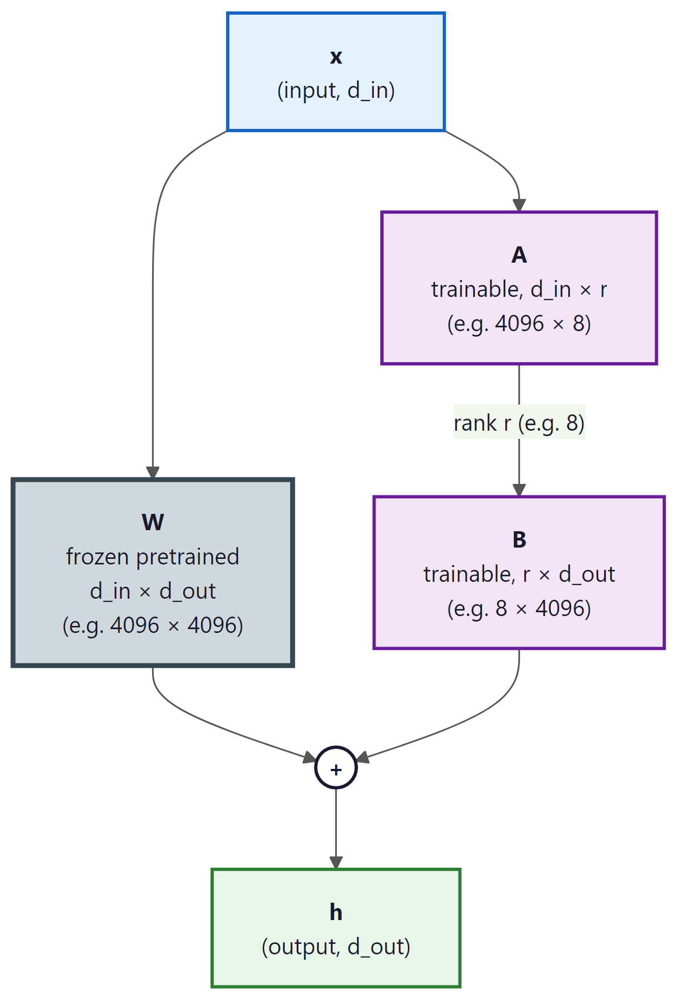

"Why update a billion parameters when a few thousand will do? Efficiency is not laziness; it is elegance under constraint."
LoRA, Elegantly Lazy AI Agent
LoRA is the single most important technique for practical LLM fine-tuning. Instead of updating all model weights, LoRA freezes the pretrained model and injects small trainable low-rank matrices into each layer. This reduces trainable parameters by 100x or more, cuts GPU memory by 60-70%, and produces adapters that can be swapped at serving time without reloading the base model. QLoRA extends this further by quantizing the frozen weights to 4-bit (building on the quantization techniques from Section 9.1), enabling fine-tuning of 70B models on a single 48GB GPU.
Prerequisites
This section builds on fine-tuning fundamentals from Section 16.1: When and Why to Fine-Tune and the transformer architecture covered in Section 3.1: Transformer Architecture Deep Dive. You should also be comfortable with the quantization concepts from Section 9.1: Quantization Fundamentals, as QLoRA builds directly on 4-bit quantization techniques. An understanding of catastrophic forgetting from Section 16.2 will help you appreciate why parameter-efficient methods preserve base model capabilities.
For a hands-on walkthrough of LoRA and PEFT using Hugging Face libraries, see Hugging Face: Transformers, Datasets, and Hub.
17.1.1 The Full Fine-Tuning Problem
The convention to target Q and V (and sometimes K and O) but rarely the FFN comes from Hu et al.'s original ablation: attention projection matrices contributed most of the per-task gain at a fraction of the parameters, because attention is where task-specific routing lives (which tokens attend where), while FFNs hold factual knowledge learned during pretraining that fine-tuning should not disturb. This maps onto the Geva et al. (2021) finding that FFN layers behave like key-value memory stores. The principle: adapt the parts of the network that need to learn new behavior, freeze the parts that store existing knowledge. Targeting FFNs in LoRA can be useful for domain adaptation where new facts matter; targeting attention is better for new tasks.
LoRA is most commonly used as the parameter-efficient backbone of preference fine-tuning (DPO, ORPO, IPO). For the preference-optimization side of the same workflow, see Section 18.3: DPO & Modern Preference Optimization.
Before launching a multi-hour fine-tuning job, run 100 steps on a single batch of 8-16 examples with no regularization (weight_decay=0, no dropout). Loss should reach near zero. If it does not, you have a bug: wrong masking (loss computed on prompt tokens), broken chat template, mismatched tokenizer, or learning rate orders of magnitude too low. This 5-minute check has saved countless wasted GPU-hours. If loss goes to zero, kill the run and launch properly.
A natural question: why does LoRA target attention matrices rather than FFN layers that contain most of the parameters? The answer connects to the functional distinction. FFN layers store factual knowledge as static key-value pairs baked into weights (see Section 4.1). Adapting FFN rows overwrites stored facts, expensive, risks erasing useful pretrained knowledge. Attention projections, by contrast, determine how tokens route information: which positions can speak to which. Adapting Q, K, V, O reshapes routing patterns without touching factual stores. This is why fine-tuning with LoRA applied only to attention achieves strong task performance with minimal catastrophic forgetting: you are teaching new communication patterns while leaving knowledge intact. When a task requires injecting genuinely new factual knowledge (not just new behavior), LoRA on FFN or full fine-tuning becomes necessary.
When you fine-tune a model with full parameter updates, every weight in the model gets a gradient, an optimizer state (momentum and variance for Adam), and a copy of the updated weight. For a 7B parameter model in FP16, that means 14 GB just for the weights, plus roughly 42 GB for optimizer states, totaling over 56 GB of GPU memory. Scaling to 13B or 70B models makes this prohibitively expensive.
The key insight behind parameter-efficient methods is that the weight changes during fine-tuning are low-rank. Research (Aghajanyan et al., 2021) has shown that when you compute the difference between a fine-tuned model and its pretrained base (the "task-specific delta"), this delta matrix has a very low intrinsic dimensionality, meaning it can be well-approximated by a matrix of much lower rank. Most of the information in the update can be captured by a much smaller matrix. Think of it like image compression: a JPEG discards high-frequency details that humans barely notice, keeping the image recognizable at a fraction of the file size. Similarly, LoRA discards the high-rank components of the weight update, keeping only the most important directions of change.
LoRA adapters for a 7B model are typically 10 to 50 MB in size. The base model itself is 14 GB. This means you can store 280 different task-specific adapters in the same disk space as a single full fine-tune. Some teams maintain a "LoRA library" with dozens of specialized adapters (one for legal text, one for medical notes, one for code review) that share a single base model in GPU memory and swap at request time. It is like having 280 employees who all share the same brain but carry different notebooks.
Think of LoRA as adding sticky notes to a textbook rather than rewriting the pages. The original textbook (pretrained weights) stays untouched. Each sticky note (low-rank adapter) captures a small correction or addition that adjusts the meaning for your specific task. At inference time, you can peel off one set of sticky notes and apply a different set for a new task, all without ever altering the original textbook pages.
LoRA achieves 90%+ of full fine-tuning performance while training less than 1% of the parameters. It is the deep learning equivalent of altering a suit instead of buying a new one: same great fit, fraction of the cost.
| Model Size | Full FT Memory (FP16 + Adam) | LoRA Memory (r=16) | QLoRA Memory (NF4, r=16) |
|---|---|---|---|
| 7B | ~56 GB | ~16 GB | ~6 GB |
| 13B | ~104 GB | ~28 GB | ~10 GB |
| 70B | ~560 GB | ~160 GB | ~36 GB |
Why does LoRA work with so few parameters? The deep intuition is that fine-tuning does not need to change the model's fundamental capabilities; it only needs to steer existing capabilities toward a specific task. The pretrained weight matrices encode rich, general-purpose representations built from trillions of tokens. The task-specific adaptation (learning to follow instructions, adopting a particular output format, specializing in a domain) requires only small directional adjustments to these representations. Mathematically, these adjustments occupy a low-dimensional subspace of the full weight space, which is precisely what low-rank matrices capture. This is why rank-4 or rank-8 LoRA frequently matches full fine-tuning: the effective dimensionality of the task adaptation is genuinely small, regardless of the model's total parameter count.
The effectiveness of LoRA is grounded in the mathematical phenomenon of low intrinsic dimensionality, a concept with roots in topology and the manifold hypothesis. The manifold hypothesis, widely discussed in machine learning theory, posits that high-dimensional data (such as model weight matrices with millions of entries) actually lies on or near a low-dimensional manifold. In linear algebra terms, the task-specific weight update occupies a tiny subspace of the full parameter space. This is not unique to neural networks: the same principle appears in signal processing (signals are sparse in the Fourier or wavelet basis), in physics (many-body systems have low effective degrees of freedom near equilibrium), and in statistics (principal component analysis exploits the same low-rank structure to compress data). LoRA's rank decomposition W = BA is, mathematically, a constrained version of the singular value decomposition (SVD) applied to the weight update, keeping only the most significant singular vectors. The remarkable finding that ranks as low as 4 or 8 suffice tells us that fine-tuning operates in a surprisingly low-dimensional subspace of the full parameter manifold.
A common misconception is that increasing the LoRA rank (r) always improves fine-tuning quality. In practice, ranks above 32 rarely improve performance for most tasks and can actually degrade results by increasing overfitting risk on small datasets. The sweet spot for most tasks is r=8 to r=16. Higher ranks (32 to 64) are useful only for complex multi-task fine-tuning or when the task requires substantial behavioral change. Always start with r=8 and increase only if validation metrics plateau. More parameters to train also means more memory, slower training, and larger adapter files.
17.1.2 LoRA Mathematics
The forward pass W′ = W + (α/r)BA is well-known. The backward pass is where the memory saving actually happens. PyTorch sees W₀ with requires_grad=False and never allocates a gradient tensor for it. Only A and B accumulate gradients:
# Input: frozen base weights W0 (d_in x d_out), trainable LoRA factors A (d_in x rank), B (rank x d_out), scaling alpha
# Output: output y = x @ (W0 + (alpha/rank) * A @ B); gradients flow only through A and B
from torch import nn
import torch
class LoRALinear(nn.Module):
def __init__(self, d_in, d_out, rank, alpha):
super().__init__()
self.W0 = nn.Parameter(torch.randn(d_in, d_out), requires_grad=False)
self.A = nn.Parameter(torch.randn(d_in, rank) * 0.02)
self.B = nn.Parameter(torch.zeros(rank, d_out))
self.scale = alpha / rank
def forward(self, x):
return x @ self.W0 + (x @ self.A @ self.B) * self.scale
layer = LoRALinear(512, 512, rank=8, alpha=16)
layer(torch.randn(4, 512)).sum().backward()
print(layer.A.grad.shape) # (512, 8)
print(layer.W0.grad) # None <-- the memory saving
The 60-70% optimizer-memory saving in LoRA training is exactly this: no grad_W0 tensor allocated.
17.1.2.1 The Core Decomposition
LoRA (Low-Rank Adaptation) works by expressing the weight update as a product of two small matrices. For a pretrained weight matrix W of dimension d × k, instead of computing a full update ΔW (also d × k), LoRA decomposes it as:
W' = W + ΔW = W + BA
where B is d × r and A is r × k, with the rank r being much smaller than both d and k. Typical values of r range from 4 to 64, while d and k are typically 4096 or larger. This means the number of trainable parameters drops from d × k (e.g., 16.7 million for a 4096 × 4096 matrix) to r × (d + k) (e.g., 131,072 for r=16). visualizes this decomposition.

example 4096 by 4096) and a low-rank bypass made of two small trainable matrices: A of size d_in by r (example 4096 by 8) feeding into B of size r by d_out (example 8 by 4096), where r is much smaller than d_in or d_out (rank r = 8). The two paths are summed at the plus node to produce the output h. The visual size difference between W and A or B reflects the parameter ratio: the bypass has roughly 128 times fewer parameters than W.17.1.2.2 Initialization and Scaling
LoRA uses a specific initialization strategy: matrix A is initialized with a random Gaussian distribution, and matrix B is initialized to all zeros. This means that at the start of training, BA = 0, and the model behaves exactly like the pretrained base. Training gradually moves the model away from this starting point.
The scaling factor α (alpha) controls the magnitude of the LoRA update. The actual update applied is:
W' = W + (α / r) · BA
The ratio α/r acts as a learning rate multiplier for the LoRA weights. A common convention is to set α = 2r (so the effective multiplier is 2), but the optimal value depends on the task. Increasing α relative to r makes the adaptation more aggressive; decreasing it keeps the model closer to the pretrained weights.
Many tutorials present r and alpha as two independent knobs, leading readers to tune them separately. They are coupled. What actually controls update magnitude is the ratio α/r, not either value alone. Doubling r from 8 to 16 while keeping α=16 silently halves your effective learning rate. The "α = 2r" rule (and the newer rank-stabilized variant use_rslora=True, which scales by α/sqrt(r) instead) exists precisely so you can change r without re-tuning your learning rate schedule. Treat α/r as a single hyperparameter when comparing configurations.
When you double the rank r, you should also consider doubling α to maintain the same effective learning rate. Many practitioners set α = 2 × r as a starting point, then adjust based on validation performance. If training diverges, reduce α; if the model barely moves from the base, increase it.
Who: ML engineer at a mid-size SaaS company
Situation: The team needed to fine-tune Llama-2 7B for routing customer support tickets into 48 categories, but their GPU budget was a single A100 40GB.
Problem: Full fine-tuning of 7B parameters required over 100GB of GPU memory (parameters, gradients, optimizer states), far exceeding available hardware.
Dilemma: They could either pay for multi-GPU cloud instances (4x the monthly cost) or accept a smaller base model with lower accuracy.
Decision: They chose LoRA with rank 16 and alpha 32, targeting only the query and value projection matrices. This reduced trainable parameters from 7B to 4.2M (0.06%), fitting comfortably in 24GB with QLoRA 4-bit quantization.
How: Using the PEFT library with BitsAndBytesConfig for 4-bit loading, they trained for 3 epochs on 15,000 labeled tickets. Training took 2.5 hours on their single A100.
Result: The QLoRA model achieved 91.3% classification accuracy, only 1.2% below a full fine-tune baseline (92.5%). Memory usage peaked at 18GB, and the adapter checkpoint was just 33MB.
Lesson: LoRA makes fine-tuning accessible on constrained hardware with minimal accuracy trade-off; start with rank 16 and adjust only if validation loss plateaus.
17.1.2.3 Why Low-Rank Works
The effectiveness of low-rank adaptation rests on a remarkable empirical finding: the "intrinsic dimensionality" of fine-tuning updates is far lower than the full parameter count would suggest. When researchers analyzed the singular value decomposition of ΔW matrices from full fine-tuning runs, they found that a small number of singular values capture the vast majority of the update's information content. In many cases, ranks as low as 4 or 8 capture over 90% of the useful signal.
This makes intuitive sense. Fine-tuning typically adapts a model to a specific domain or task format. The knowledge required for this adaptation (new terminology, output format preferences, domain-specific reasoning patterns) is a small modification relative to the vast general knowledge encoded in the pretrained weights.
LoRA is not merely a budget-friendly approximation of full fine-tuning. It works because task-specific weight updates are inherently low-rank: the useful signal in fine-tuning occupies a small subspace of the full parameter space. This means LoRA is not sacrificing quality for efficiency; it is exploiting the structure of the problem. In many benchmarks, LoRA at rank 16 matches full fine-tuning on task accuracy while using less than 1% of the trainable parameters. Increasing rank beyond what the task requires does not help and can even hurt through overfitting, just as adding unnecessary features hurts a classical ML model.
17.1.3 LoRA Hyperparameters in Practice
Knowing that low-rank works does not tell you which rank to pick or which layers to adapt. Three hyperparameters dominate every LoRA configuration in production: the rank r, the scaling factor alpha, and the set of target modules. Each comes with empirical defaults and known failure modes, and we walk through them in the order you should tune them.
17.1.3.1 Rank (r) Selection
| Rank | Trainable Params (7B model) | Best For | Risk |
|---|---|---|---|
| 4 | ~2M | Simple format adaptation, chat templates | May underfit complex tasks |
| 8 | ~4M | Classification, simple instruction following | Good default for most tasks |
| 16 | ~8M | Domain adaptation, moderate complexity | Slight increase in memory |
| 32 | ~16M | Complex reasoning, code generation | Diminishing returns begin |
| 64 | ~33M | Very complex tasks, near full FT quality | Memory approaches full FT |
17.1.3.2 Target Module Selection
The Hugging Face peft library reduces a LoRA setup to a single LoraConfig plus get_peft_model. Pass target_modules="all-linear" to attach adapters to every linear layer at once, set r and lora_alpha with the rule of thumb alpha = 2 * r, and use use_rslora=True to switch on rank-stabilized scaling. The same config object plugs straight into TRL's SFTTrainer and DPOTrainer.
Show code
pip install peft transformers
from peft import LoraConfig, get_peft_model, TaskType
cfg = LoraConfig(task_type=TaskType.CAUSAL_LM, r=16, lora_alpha=32,
lora_dropout=0.05, target_modules="all-linear",
bias="none", use_rslora=True)
model = get_peft_model(base_model, cfg)
model.print_trainable_parameters()Not all weight matrices benefit equally from LoRA adaptation. The standard practice is to apply LoRA to the attention projection matrices: q_proj, k_proj, v_proj, and o_proj. Research and practice have converged on the recommendation to also include the MLP layers (gate_proj, up_proj, down_proj) for best results, though this increases trainable parameters.
Code Fragment 17.1.6 shows this approach in practice.
# Configure LoRA adapter parameters: rank, alpha, target modules
# Lower rank reduces trainable parameters; alpha scales the adapter contribution
from peft import LoraConfig, get_peft_model, TaskType
# Standard configuration: attention layers only
lora_config_basic = LoraConfig(
task_type=TaskType.CAUSAL_LM,
r=16,
lora_alpha=32, # alpha = 2r
lora_dropout=0.05,
target_modules=["q_proj", "k_proj", "v_proj", "o_proj"],
bias="none",
)
# Recommended: attention + MLP layers for best quality
lora_config_full = LoraConfig(
task_type=TaskType.CAUSAL_LM,
r=16,
lora_alpha=32,
lora_dropout=0.05,
target_modules=[
"q_proj", "k_proj", "v_proj", "o_proj",
"gate_proj", "up_proj", "down_proj",
],
bias="none",
)
# Apply LoRA to a model
model = get_peft_model(model, lora_config_full)
model.print_trainable_parameters()Code Fragment 17.1.2b configures LoRA adapters.
# Set up parameter-efficient fine-tuning with LoRA adapters
# Freeze the base model and train only the low-rank decomposition matrices
from peft import PeftModel, AutoPeftModelForCausalLM
from transformers import AutoModelForCausalLM, AutoTokenizer
import torch
# === Option A: Load adapter separately ===
base_model = AutoModelForCausalLM.from_pretrained(
"meta-llama/Meta-Llama-3-8B",
torch_dtype=torch.bfloat16,
device_map="auto",
)
# Load different adapters dynamically
model = PeftModel.from_pretrained(base_model, "./lora-medical")
# Switch to another adapter
model.load_adapter("./lora-legal", adapter_name="legal")
model.set_adapter("legal")
# === Option B: Merge and save ===
model = AutoPeftModelForCausalLM.from_pretrained(
"./lora-medical",
torch_dtype=torch.bfloat16,
device_map="auto",
)
merged_model = model.merge_and_unload()
merged_model.save_pretrained("./llama3-medical-merged")
tokenizer.save_pretrained("./llama3-medical-merged")
# === Option C: Merge QLoRA (requires dequantization) ===
# Load the QLoRA model in full precision for merging
model = AutoPeftModelForCausalLM.from_pretrained(
"./qlora-output",
torch_dtype=torch.float16,
device_map="auto",
low_cpu_mem_usage=True,
)
merged = model.merge_and_unload()
merged.save_pretrained("./merged-model")
print("Merged model saved. Upload to HF Hub or serve with vLLM.")When merging QLoRA adapters, you must load the base model in higher precision (FP16 or BF16) first, then merge. This is because the merge operation (W' = W + (α/r) · BA) needs sufficient numerical precision. Merging in 4-bit would introduce unacceptable quantization noise. After merging, you can re-quantize the merged model to GGUF or AWQ for efficient serving.
LoRA adapters unlock multi-tenant serving. Because LoRA keeps the base model frozen and stores task-specific knowledge in small adapter matrices, you can serve dozens of different fine-tuned "models" from a single base model in GPU memory. At inference time, you simply swap the active adapter (a few megabytes) instead of loading an entirely separate model (many gigabytes). This has profound implications for inference optimization and deployment: frameworks like LoRAX and S-LoRA can serve hundreds of adapters concurrently with minimal overhead, making personalized models economically viable at scale.
17.1.4 LoRA Hyperparameter Tuning Guide
Finding optimal LoRA hyperparameters requires systematic experimentation. Here is a practical guide based on what works across a wide range of tasks and model sizes.
| Hyperparameter | Default | When to Increase | When to Decrease |
|---|---|---|---|
r (rank) | 16 | Complex tasks, large datasets, reasoning | Simple format changes, small datasets |
lora_alpha | 2 × r | Model not adapting enough | Training diverging, loss spiking |
lora_dropout | 0.05 | Overfitting (val loss rises) | Large dataset, underfitting |
learning_rate | 2e-4 | Underfitting, slow convergence | Divergence, loss oscillation |
max_grad_norm | 1.0 | Very stable training | Gradient spikes (try 0.3) |
LoRA learning rates are typically 5-10x higher than full fine-tuning learning rates. This is because only a small fraction of parameters are being updated, so each update needs to have a larger effect. A learning rate of 2e-4 for LoRA corresponds roughly to 2e-5 for full fine-tuning in terms of per-step model change.
lora_dropout actually dropsThe lora_dropout parameter applies standard Bernoulli dropout to the input of the low-rank delta path (the $A$ matrix's input), not to the base model. During each forward pass a fraction $p$ of input features going into $A$ are zeroed and the remaining ones are scaled by $1/(1-p)$ to preserve expected magnitudes; the frozen base matrix $W_0$ receives the unmodified input. This regularizes only the adapter, so the base model's frozen behavior is never perturbed. A small value such as $p=0.05$ is enough for most fine-tunes because the adapter has so few parameters; raising it past $0.1$ tends to slow convergence without further reducing overfitting.
17.1.5 The PEFT Library Ecosystem
The Hugging Face peft library provides a unified interface for all parameter-efficient methods. Beyond basic LoRA, it supports loading adapters from the Hub, combining adapters, and quantized training workflows.
Code Fragment 17.1.2c shows this approach in practice.
import torch
# Configure LoRA adapter parameters: rank, alpha, target modules
# Lower rank reduces trainable parameters; alpha scales the adapter contribution
from peft import (
PeftModel,
PeftConfig,
get_peft_model,
LoraConfig,
TaskType,
AutoPeftModelForCausalLM,
)
# Load a LoRA adapter from Hugging Face Hub
model = AutoPeftModelForCausalLM.from_pretrained(
"username/my-lora-adapter", # Adapter repo on HF Hub
device_map="auto",
torch_dtype=torch.bfloat16,
)
# Inspect adapter configuration
config = PeftConfig.from_pretrained("username/my-lora-adapter")
print(f"Base model: {config.base_model_name_or_path}")
print(f"Rank: {config.r}, Alpha: {config.lora_alpha}")
print(f"Target modules: {config.target_modules}")
# Push adapter to Hub (only saves the small adapter weights)
model.push_to_hub("username/my-lora-adapter")
# Adapter size: typically 50-200 MB vs 14+ GB for full modelQLoRA: 4-Bit Quantized LoRA
QLoRA (Dettmers et al., 2023) combines LoRA with 4-bit NF4 quantization of the base model, reducing memory by roughly 4x compared to standard LoRA in FP16. The bitsandbytes library handles the quantization transparently through BitsAndBytesConfig. The frozen base weights are stored in 4-bit precision, while the LoRA adapter matrices train in BF16. This enables fine-tuning a 70B model on a single 48 GB GPU. Code Fragment 17.1.9 shows the setup.
# pip install bitsandbytes peft transformers
from transformers import AutoModelForCausalLM, AutoTokenizer, BitsAndBytesConfig
from peft import LoraConfig, get_peft_model, prepare_model_for_kbit_training
import torch
# 4-bit NF4 quantization config
bnb_config = BitsAndBytesConfig(
load_in_4bit=True,
bnb_4bit_quant_type="nf4",
bnb_4bit_compute_dtype=torch.bfloat16,
bnb_4bit_use_double_quant=True, # quantize the quantization constants
)
model = AutoModelForCausalLM.from_pretrained(
"meta-llama/Llama-3.1-8B-Instruct",
quantization_config=bnb_config,
device_map="auto",
)
model = prepare_model_for_kbit_training(model) # freeze + enable gradients
lora_config = LoraConfig(r=16, lora_alpha=32, lora_dropout=0.05,
target_modules=["q_proj", "k_proj", "v_proj", "o_proj",
"gate_proj", "up_proj", "down_proj"],
bias="none", task_type="CAUSAL_LM")
model = get_peft_model(model, lora_config)
model.print_trainable_parameters()
# trainable params: 13,631,488 || all params: 4,544,075,776 || trainable%: 0.30Under the Hood: NF4, Blockwise, and Double Quantization
Three quantization tricks make QLoRA work. The first is the NF4 (4-bit NormalFloat) data type, a 16-value codebook hand-designed for tensors whose values are approximately $\mathcal{N}(0, \sigma^2)$ distributed (the regime that pretrained transformer weights consistently fall into after layer-norm). Rather than placing the 16 levels at uniform spacing across the value range, NF4 places them at the quantiles of a unit normal so that each level has equal expected probability mass. The full 16 anchor values (used by every modern bitsandbytes install) are:
$$\begin{aligned}\text{NF4} = \{&-1.0,\ -0.6962,\ -0.5251,\ -0.3949,\ -0.2844,\ -0.1848,\\ &-0.0911,\ 0.0,\ 0.0796,\ 0.1609,\ 0.2461,\ 0.3379,\\ &0.4407,\ 0.5626,\ 0.7230,\ 1.0\}\end{aligned}$$
The codebook is asymmetric around zero (9 positive, 7 negative including the explicit $0$) because the encoded distribution is forced to lie in $[-1, 1]$ by per-block scaling and exactly one anchor must sit at each endpoint to keep the dynamic range. Spacing is tight near zero (where the bulk of weight mass lives) and sparse near $\pm 1$ (the tails), the opposite of uniform quantization.
The second trick is blockwise quantization. A single global scale across an entire weight matrix is dominated by the largest outlier, which crushes precision for the typical weight. QLoRA instead splits each tensor into blocks of 64 contiguous parameters and quantizes each block independently against its own absolute-maximum scale $c_i = \max(|w_j|)$ for $w_j$ in block $i$. Each weight is stored as a 4-bit code (16 levels) plus the block shares a 32-bit FP32 scale. The per-parameter cost is therefore $4 + 32/64 = 4.5$ bits.
The third trick, double quantization, attacks the residual 0.5-bit overhead. The block scales $c_i$ are themselves a long FP32 vector (one per 64 weights), so QLoRA groups those scales into super-blocks of 256 and quantizes each super-block to 8-bit precision against a single FP32 super-scale. The per-parameter cost drops to $4 + 8/64 + 32/(64 \cdot 256) \approx 4.127$ bits, recovering roughly 0.37 bits per parameter (about 3 GB on a 65B model) at negligible accuracy cost. The complete chain is summarized in Table 17.1.4a.
| Layer | Per-parameter cost | 65B model size |
|---|---|---|
| FP16 baseline | 16 bits | 130 GB |
| NF4 codebook only (1 global scale) | 4 bits | 32.5 GB |
| + Blockwise FP32 scales (block=64) | 4.5 bits | 36.5 GB |
| + Double quantization (super-block=256) | 4.127 bits | 33.5 GB |
Pretrained transformer weights look like draws from a zero-mean normal after the layer-norm rescaling baked into modern architectures. An information-theoretically optimal 4-bit quantizer for a $\mathcal{N}(0, 1)$ source places its levels at the 16 equal-probability quantiles of the normal CDF, which is exactly how the NF4 anchors are derived. A uniform 4-bit grid would waste codewords on the rare tails and starve the dense center, hurting accuracy. NF4 is therefore a Lloyd-Max-style optimal quantizer rather than a clever heuristic.
For most fine-tuning tasks, LoRA rank 8 produces strong results with minimal trainable parameters. Increase to 16 or 32 only if you see underfitting. Higher ranks add parameters quadratically but rarely improve quality beyond rank 32.
LoRA variants continue to proliferate: DoRA decomposes weight updates into magnitude and direction components, while rsLoRA applies rank-dependent scaling for more stable training at higher ranks. Research on LoRA composition explores stacking, merging, and routing among multiple LoRA adapters at inference time, enabling modular skill composition without retraining. An open theoretical question is why low-rank adaptation works as well as full fine-tuning despite the severe parameter reduction, and whether optimal rank can be predicted from task properties.
Recent work on LoRA Soups (2024) demonstrates that averaging multiple LoRA adapters trained on different data can outperform any individual adapter, paralleling the model soup findings in full fine-tuning.
Objective
Apply LoRA adapters to a language model using PEFT, train on a small dataset, and compare how different rank values (r=4, r=16, r=64) affect trainable parameter count, memory usage, and output quality.
What You'll Practice
- Configuring LoRA with the PEFT library (target modules, rank, alpha)
- Inspecting trainable vs. frozen parameter counts
- Training LoRA adapters with SFTTrainer
- Saving, reloading, and merging adapters into the base model
- Comparing rank settings on quality and efficiency metrics
Setup
The following cell installs the required packages and configures the environment for this lab.
Steps
Step 1: Load the base model and apply LoRA
Load a small model and wrap it with a LoRA configuration. Inspect the parameter counts to see how few parameters are actually trainable.
# Load a small model and wrap with LoRA: only the low-rank adapter
# matrices are trainable; all original weights stay frozen.
from transformers import AutoModelForCausalLM, AutoTokenizer
from peft import LoraConfig, get_peft_model, TaskType
import torch
model_name = "HuggingFaceTB/SmolLM2-135M-Instruct"
tokenizer = AutoTokenizer.from_pretrained(model_name)
if tokenizer.pad_token is None:
tokenizer.pad_token = tokenizer.eos_token
base_model = AutoModelForCausalLM.from_pretrained(
model_name, torch_dtype=torch.float16, device_map="auto"
)
# TODO: Create a LoraConfig with rank=16, alpha=32
lora_config = LoraConfig(
r=16,
lora_alpha=32,
target_modules=["q_proj", "v_proj"],
task_type=TaskType.CAUSAL_LM,
lora_dropout=0.05,
bias="none"
)
model = get_peft_model(base_model, lora_config)
model.print_trainable_parameters()Hint
The print_trainable_parameters() method shows something like "trainable params: 131,072 || all params: 135,000,000 || trainable%: 0.097". Only the LoRA matrices are trainable; everything else is frozen.
Step 2: Compare parameter counts across ranks
Create LoRA configs with different ranks and compare the trainable parameter counts.
from transformers import AutoModelForCausalLM
import torch
# Compare trainable parameter counts across LoRA ranks (4 to 64).
# Shows how rank controls the expressiveness vs. efficiency tradeoff.
import pandas as pd
ranks = [4, 8, 16, 32, 64]
results = []
for r in ranks:
base = AutoModelForCausalLM.from_pretrained(
model_name, torch_dtype=torch.float16, device_map="auto")
config = LoraConfig(r=r, lora_alpha=r * 2,
target_modules=["q_proj", "v_proj"],
task_type=TaskType.CAUSAL_LM, lora_dropout=0.05, bias="none")
pm = get_peft_model(base, config)
# TODO: Extract trainable and total parameter counts
trainable = sum(p.numel() for p in pm.parameters() if p.requires_grad)
total = sum(p.numel() for p in pm.parameters())
results.append({"rank": r, "trainable": trainable,
"total": total, "pct": f"{trainable/total*100:.4f}%"})
del pm, base
torch.cuda.empty_cache()
df = pd.DataFrame(results)
print(df.to_string(index=False))
Hint
Notice how trainable parameters scale linearly with rank. Doubling the rank roughly doubles the trainable parameter count. The common heuristic alpha = 2 * rank keeps the effective learning rate stable across rank settings.
Step 3: Train a LoRA adapter
Fine-tune the LoRA adapter (r=16) on a small dataset.
# Train the LoRA adapter (r=16) on 300 instruction examples.
# Only adapter weights update; base model gradients are skipped.
from trl import SFTTrainer, SFTConfig
from datasets import load_dataset
dataset = load_dataset("HuggingFaceH4/no_robots", split="train")
dataset = dataset.shuffle(seed=42).select(range(300))
def format_chat(example):
return {"text": tokenizer.apply_chat_template(
example["messages"], tokenize=False, add_generation_prompt=False)}
formatted = dataset.map(format_chat)
# TODO: Configure training (use higher LR than full fine-tuning)
training_args = SFTConfig(
output_dir="./lora-smollm2-r16",
num_train_epochs=3,
per_device_train_batch_size=4,
gradient_accumulation_steps=2,
learning_rate=2e-4, # 10x higher than full FT
logging_steps=10,
max_seq_length=512,
fp16=True,
warmup_ratio=0.1,
save_strategy="epoch",
report_to="none",
)
trainer = SFTTrainer(model=model, args=training_args,
train_dataset=formatted, processing_class=tokenizer)
result = trainer.train()
print(f"Training loss: {result.training_loss:.4f}")Hint
LoRA typically uses 5x to 10x higher learning rate than full fine-tuning because only the small adapter matrices receive gradients. A learning rate of 2e-4 is a good starting point.
Step 4: Save and merge the LoRA adapter
Save the adapter weights (only a few KB), then reload and merge them into the base model.
from transformers import AutoModelForCausalLM
import torch
# Save the tiny adapter checkpoint, then merge it back into the
# base model for deployment without the PEFT dependency.
import os
from peft import PeftModel
# Save adapter only
model.save_pretrained("./lora-adapter-r16")
adapter_size = sum(
os.path.getsize(os.path.join("./lora-adapter-r16", f))
for f in os.listdir("./lora-adapter-r16")
if f.endswith(('.safetensors', '.bin')))
print(f"Adapter size: {adapter_size / 1024:.1f} KB")
# Reload base model and merge adapter
base_fresh = AutoModelForCausalLM.from_pretrained(
model_name, torch_dtype=torch.float16, device_map="auto")
peft_model = PeftModel.from_pretrained(base_fresh, "./lora-adapter-r16")
merged_model = peft_model.merge_and_unload()
print("Adapter merged successfully!")Hint
The merge_and_unload() method folds the LoRA weights into the base model, producing a standard model that can be used without the PEFT library at inference time.
Step 5: Test the merged model
Generate responses and compare with the base model.
import torch
# Compare merged model outputs against base model on test prompts.
# Look for improved instruction-following after LoRA fine-tuning.
test_prompts = [
"Explain photosynthesis to a 10-year-old.",
"Write a short email declining a meeting politely.",
"List 3 advantages of renewable energy.",
]
for prompt in test_prompts:
messages = [{"role": "user", "content": prompt}]
fmt = tokenizer.apply_chat_template(
messages, tokenize=False, add_generation_prompt=True)
inputs = tokenizer(fmt, return_tensors="pt").to(merged_model.device)
with torch.no_grad():
outputs = merged_model.generate(
**inputs, max_new_tokens=200, temperature=0.7, do_sample=True)
response = tokenizer.decode(
outputs[0][inputs['input_ids'].shape[1]:], skip_special_tokens=True)
print(f"Prompt: {prompt}\nResponse: {response[:300]}\n{'-'*50}")
Hint
To get a fair comparison, reload the original base model and generate with the same settings. The LoRA-tuned model should show improved instruction following despite training less than 0.1% of parameters.
Expected Output
- A parameter table showing r=4 trains ~0.02%, r=16 trains ~0.1%, r=64 trains ~0.4%
- A saved adapter that is only a few hundred KB (vs. ~270MB full model)
- Merged model outputs showing improved instruction following
Stretch Goals
- Train adapters at r=4 and r=64, compare outputs, and measure which rank is best for this dataset size
- Add QLoRA by loading in 4-bit (
BitsAndBytesConfig(load_in_4bit=True)) and compare memory - Target all linear layers (
target_modules="all-linear") and compare results
Complete Solution
# Complete LoRA lab solution: load model, apply adapter, train,
# save/merge, and compare outputs before and after fine-tuning.
from transformers import AutoModelForCausalLM, AutoTokenizer
from peft import LoraConfig, get_peft_model, PeftModel, TaskType
from trl import SFTTrainer, SFTConfig
from datasets import load_dataset
import torch, pandas as pd, os
model_name = "HuggingFaceTB/SmolLM2-135M-Instruct"
tokenizer = AutoTokenizer.from_pretrained(model_name)
if tokenizer.pad_token is None: tokenizer.pad_token = tokenizer.eos_token
# Step 1: Apply LoRA
base_model = AutoModelForCausalLM.from_pretrained(model_name, torch_dtype=torch.float16, device_map="auto")
lora_config = LoraConfig(r=16, lora_alpha=32, target_modules=["q_proj","v_proj"],
task_type=TaskType.CAUSAL_LM, lora_dropout=0.05, bias="none")
model = get_peft_model(base_model, lora_config)
model.print_trainable_parameters()
# Step 2: Compare ranks
for r in [4, 8, 16, 32, 64]:
b = AutoModelForCausalLM.from_pretrained(model_name, torch_dtype=torch.float16, device_map="auto")
c = LoraConfig(r=r, lora_alpha=r*2, target_modules=["q_proj","v_proj"],
task_type=TaskType.CAUSAL_LM, lora_dropout=0.05, bias="none")
pm = get_peft_model(b, c)
t = sum(p.numel() for p in pm.parameters() if p.requires_grad)
a = sum(p.numel() for p in pm.parameters())
print(f"r={r}: {t:,} trainable / {a:,} total = {t/a*100:.4f}%")
del pm, b; torch.cuda.empty_cache()
# Step 3: Train
ds = load_dataset("HuggingFaceH4/no_robots", split="train").shuffle(seed=42).select(range(300))
def fmt(ex): return {"text": tokenizer.apply_chat_template(ex["messages"], tokenize=False, add_generation_prompt=False)}
formatted = ds.map(fmt)
args = SFTConfig(output_dir="./lora-smollm2-r16", num_train_epochs=3, per_device_train_batch_size=4,
gradient_accumulation_steps=2, learning_rate=2e-4, logging_steps=10, max_seq_length=512,
fp16=True, warmup_ratio=0.1, save_strategy="epoch", report_to="none")
trainer = SFTTrainer(model=model, args=args, train_dataset=formatted, processing_class=tokenizer)
trainer.train()
# Step 4: Save and merge
model.save_pretrained("./lora-adapter-r16")
base_fresh = AutoModelForCausalLM.from_pretrained(model_name, torch_dtype=torch.float16, device_map="auto")
merged = PeftModel.from_pretrained(base_fresh, "./lora-adapter-r16").merge_and_unload()
# Step 5: Test
for p in ["Explain photosynthesis to a 10-year-old.", "Write a short email declining a meeting.", "List 3 advantages of renewable energy."]:
msgs = [{"role":"user","content":p}]
f = tokenizer.apply_chat_template(msgs, tokenize=False, add_generation_prompt=True)
i = tokenizer(f, return_tensors="pt").to(merged.device)
with torch.no_grad():
o = merged.generate(**i, max_new_tokens=200, temperature=0.7, do_sample=True)
print(f"Q: {p}\nA: {tokenizer.decode(o[0][i['input_ids'].shape[1]:], skip_special_tokens=True)[:300]}\n")- LoRA decomposes weight updates into two small matrices (W' = W + BA), reducing trainable parameters by 100x or more while matching full fine-tuning quality on most tasks.
- Rank (r) controls the capacity of the adaptation. Start with r=16 for most tasks; increase to 32 or 64 only for complex reasoning tasks with sufficient data.
- Alpha scaling (α/r) acts as a learning rate multiplier. Set α = 2r as a default, and adjust based on training stability and downstream performance.
- Target all linear layers (attention + MLP) for best quality. Targeting only attention layers is faster but may sacrifice 1-3% accuracy on complex tasks.
- QLoRA enables 70B fine-tuning on a single GPU by combining NF4 quantization, double quantization, and paged optimizers, at the cost of ~30% slower training.
- Adapter merging converts the LoRA model into a standard model format. Merge in high precision (FP16/BF16), then re-quantize for serving if needed.
- LoRA learning rates are 5-10x higher than full fine-tuning rates because fewer parameters share the gradient signal.
Show Answer
Show Answer
Show Answer
Show Answer
Show Answer
Exercises
Explain how LoRA works: what does it mean to add low-rank matrices A and B to a frozen weight matrix W? Why does this reduce memory and compute requirements?
Answer Sketch
Instead of updating W (d x d, millions of parameters), LoRA freezes W and learns two small matrices: A (d x r) and B (r x d), where r << d (typically 8 to 64). The effective weight becomes W' = W + BA. This reduces trainable parameters from d*d to 2*d*r. For a 4096x4096 matrix with r=16, parameters drop from 16.7M to 131K (128x reduction). Memory savings come from not storing optimizer states (momentum, variance) for the frozen W.
You are fine-tuning a 7B model with LoRA. Compare the expected outcomes of rank=8/alpha=16 versus rank=64/alpha=128. How does the rank affect model capacity, training speed, and risk of overfitting?
Answer Sketch
Rank 8: 0.1% trainable parameters, fastest training, lowest memory, but limited capacity for complex adaptations. Best for simple style transfer or single-task tuning. Rank 64: ~0.8% trainable parameters, slower but still much faster than full fine-tuning, more capacity for complex multi-task adaptation. Higher risk of overfitting on small datasets. Alpha/rank ratio (both 2.0 here) controls the effective learning rate of the LoRA updates; keeping it consistent means the learning dynamics are similar despite different ranks.
Write the Python code to load a model in 4-bit quantization using bitsandbytes and attach LoRA adapters using the PEFT library. Include the BitsAndBytesConfig and LoraConfig.
Answer Sketch
bnb_config = BitsAndBytesConfig(load_in_4bit=True, bnb_4bit_quant_type='nf4', bnb_4bit_compute_dtype=torch.bfloat16). Load: model = AutoModelForCausalLM.from_pretrained('meta-llama/Llama-3-8B', quantization_config=bnb_config). LoRA: lora_config = LoraConfig(r=16, lora_alpha=32, target_modules=['q_proj','v_proj','k_proj','o_proj'], lora_dropout=0.05). Apply: model = get_peft_model(model, lora_config). This enables fine-tuning a 7B model on a single 16GB GPU.
Which transformer modules should you apply LoRA to? Compare applying LoRA to only attention projections (q, v) versus all linear layers (q, k, v, o, gate, up, down). What are the tradeoffs?
Answer Sketch
Attention only (q, v): the original LoRA paper's default. Minimal parameters, fast training, works well for many tasks. All linear layers: ~3x more parameters but better adaptation capacity. Research shows that including the MLP layers (gate, up, down) improves performance on complex tasks and domain adaptation. Tradeoff: more target modules means more memory, slower training, but better quality. Start with q, v; expand to all linear layers if quality is insufficient.
Write code that merges a LoRA adapter back into the base model weights for deployment. Explain when you would serve with merged weights versus keeping the adapter separate.
Answer Sketch
Merge: merged_model = model.merge_and_unload(). Save: merged_model.save_pretrained('merged_model/'). Merge for deployment when: (1) you have a single adapter and want maximum inference speed (no adapter overhead), (2) you are using a serving framework that does not support adapters. Keep separate when: (1) you serve multiple adapters from the same base model (multi-tenant), (2) you want to A/B test adapters, (3) you need to quickly swap or update adapters without redeploying the base model.
What Comes Next
In the next section, Section 17.2: Advanced PEFT Methods, we survey advanced PEFT methods beyond LoRA, including DoRA, LoRA+, prefix tuning, adapters, and prompt tuning.